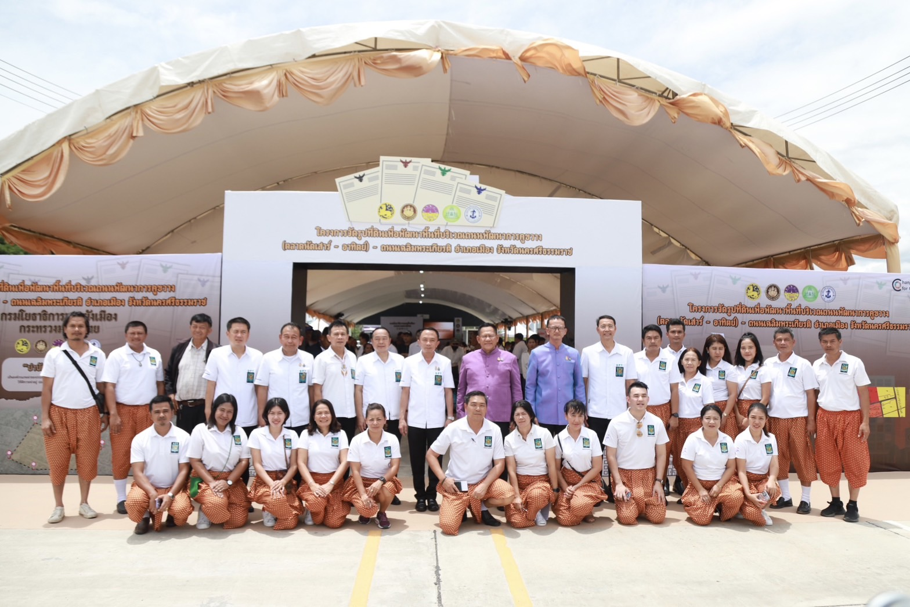

ข่าวกิจกรรม
ข่าวประชาสัมพันธ์
ข่าวตัดจากหนังสือพิมพ์
ข่าวกรม
วารลารกรมฯ
คลังข่าวมหาดไทย
21
ก.ย. 66
12
รองอธิบดีกรมโยธาธิการและผังเมือง
ลงพื้นที่ติดตามปลัดมหาดไทย
ตรวจเยี่ยมการปรับปรุงภูมิทัศน์คลองหาดส้มแป้น ตำบลเขานิเวศน์
อำเภอเมืองระนอง
จังหวัดระนอง
สร้างเมื่อ 21 กันยายน 2566
กลับ


กรมโยธาธิการและผังเมือง จัดกิจกรรมจิตอาสา "เราทำความ ดี ด้วยหัวใจ"
เนื่องในวันมหิดล 24 กันยายน 2566
วันนี้ (21 กันยายน 2566) เวลา 09.30 น. ท่านอธิบดีมอบหมายให้ นายนิเวศน์
ล้ำเลิศลักษณชัย วิศวกรโยธาเชี่ยวชาญ กรมโยธาธิการและผังเมือง นำคณะบุคลากรกรมฯ
และกำลังพลจิตอาสาศูนย์ขับเคลื่อนงานจิตอาสา (ศข. จอส. ยผ.) ทำกิจกรรมจิตอาสา
“เราทำความ ดี ด้วยหัวใจ” เนื่องในวันมหิดล 24 กันยายน 2566 ประกอบด้วยกิจกรรม
ทำความสะอาดบริเวณพื้นที่รอบพระอุโบสถ และวิหาร ทำความสะอาดห้องน้ำ
และเก็บขยะบริเวณรอบวัดประสาทบุญญาวาส เขตดุสิต กรุงเทพมหานคร
โดยมีกำลังพลจิตอาสาจากสำนักวิศวกรรมโครงสร้างและงานระบบ สำนักสถาปัตยกรรม
กองควบคุมการก่อสร้าง กองการเจ้าหน้าที่ กองบูรณะและบำรุงรักษา
และกลุ่มพัฒนาระบบบริหาร รวมจำนวน 54 คน ณ วัดประสาทบุญญาวาส เขตดุสิต
กรุงเทพมหานคร
แท็ก
เอกสารที่เกี่ยวข้อง
PDF
(155 Kb.)
news_041064
สร้างเมื่อ วันจันทร์ 4 ตุลาคม 2564
ดาวน์โหลด (10)
แจ้งไฟล์เสีย
PDF
(155 Kb.)
news_041064
สร้างเมื่อ วันจันทร์ 4 ตุลาคม 2564
ดาวน์โหลด (10)
แจ้งไฟล์เสีย
PDF
(155 Kb.)
news_041064
สร้างเมื่อ วันจันทร์ 4 ตุลาคม 2564
ดาวน์โหลด (10)
แจ้งไฟล์เสีย
PDF
(155 Kb.)
news_041064
สร้างเมื่อ วันจันทร์ 4 ตุลาคม 2564
ดาวน์โหลด (10)
แจ้งไฟล์เสีย
ข่าวที่เกี่ยวข้อง

กรมโยธาธิการและผังเมือง จัดกิจกรรมจิตอาสา
”เราทำความ ดี
ด้วยหัวใจ” เนื่องในวันมหิดล 24 กันยายน 2566
21 กันยายน 2566
กรมโยธาธิการและผังเมือง
จัดกิจกรรมจิตอาสา "เราทำความ
ดี
ด้วยหัวใจ" เนื่องในวันมหิดล 24 กันยายน 2566

รองอธิบดีกรมโยธาธิการและผังเมือง ลงพื้นที่
“โครงการขุดลอกคลอง กำจัดวัชพืช เพื่อเพิ่มประสิทธิภาพการระบายน้ำ
21 กันยายน 2566
รองอธิบดีกรมโยธาธิการและผังเมือง
ลงพื้นที่
“โครงการขุดลอกคลอง กำจัดวัชพืช เพื่อเพิ่มประสิทธิภาพการระบายน้ำ
บริเวณคลองแขวงกลั่น - คลองหลวงพินิจ" ตำบลเทพราช อำเภอบ้านโพธิ์
จังหวัดฉะเชิงเทรา
ขับเคลื่อนการพัฒนาตามผังภูมิสังคมเพื่อการบริหารจัดการน้ำหมู่บ้าน/ชุมชน
แบบบูรณาการอย่างยั่งยืน (Geo - social Map)
ข่าวก่อนหน้า
ข่าวต่อไป